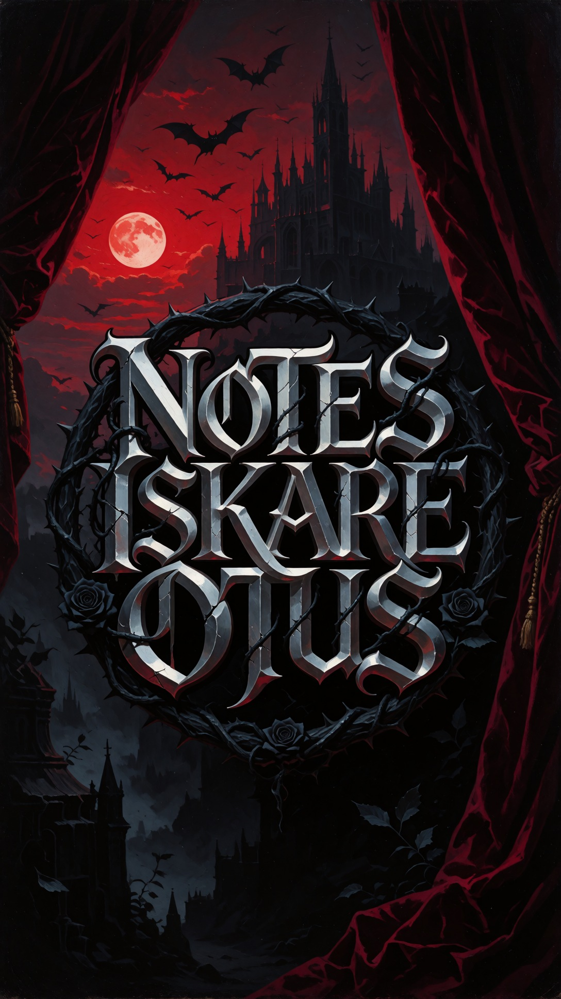

Музыкальный промпт-инжиниринг
Формулирование музыкальной задачи, подбор стиля, атмосферы, структурных ориентиров и вокальной подачи для генерации в Suno.

NOTES ISKAREOTUS ← На основной сайтSuno Premier · AI Music Creator
NOTES ISKAREOTUS — независимый музыкальный проект. Портфолио демонстрирует работу с музыкальными промптами, подбором жанра, структуры, атмосферы и вокальной подачи в Suno.
Рассматриваю задачи по AI-музыке, подготовке музыкальных концепций, песен, фоновых тем и сопровождения видео. Конкретные технические требования, бюджет и срок обсуждаются до начала сотрудничества.

Формулирование музыкальной задачи, подбор стиля, атмосферы, структурных ориентиров и вокальной подачи для генерации в Suno.
Сравнение вариантов генерации, работа с текстом и концепцией, подбор наиболее уместного звучания под задачу.
Персональные песни, музыкальные темы для сюжета, видеоконтента и творческих проектов. Условия использования согласуются отдельно.
Пять самостоятельных музыкальных альбомов — основа портфолио. Они демонстрируют основной жанр автора, но не ограничивают направления возможных заказов.
Музыкальная тема для инди-игры или визуальной новеллы · Песня с персональным сюжетом · Композиция для ролика или тизера · Работа с промптами Suno · Подбор стилистики под творческий бриф.
В первом сообщении достаточно описать музыкальную задачу, ожидаемый результат, количество композиций, сроки и бюджет. Для заказчиков важно: создание музыки происходит с использованием генеративного ИИ, включая Suno. Права на использование материала, условия лицензирования и возможности передачи исходных файлов требуют предварительного согласования; исключительные права автоматически не гарантируются.
 Пути Загробного Мира
Пути Загробного Мира Грехи Небес
Грехи Небес